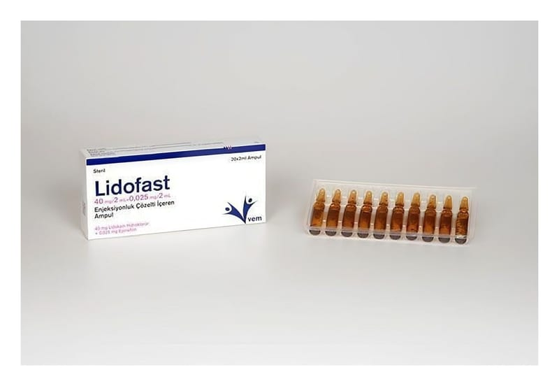

Lidofast 40 mg/2 ml+0,025 mg/2 ml Enjeksiyonluk Çözelti İçeren Ampul, 20 Adet

Ne için kullanılır
KT · Bölüm 1 LĠDOFAST etken madde olarak lidokain hidroklorür ve epinefrin içerir. Lidokain lokal anestezik (bölgesel anestezi yapan ilaç) olarak adlandırılan ilaç grubuna aittir. Bu ilaçlar, vücudun gerekli bölümünü uyuĢturmak, hissizleĢtirmek için kullanılır. Epinefrin vazokonstriktör (damarları büzücü) olarak adlandırılan bir ilaç grubuna dahildir. Bu ilaçlar enjeksiyon yapılan yerdeki damarları daraltarak daha az kan geçmesini ve ilacın etkisinin daha uzun süre devam etmesini sağlar.
LĠDOFAST tıbbi uygulamalar ve ameliyatlarda, ağrıyı önlemek için kullanılır. LĠDOFAST’ın uygulama Ģekli, anestezinin yerine ve cinsine göre değiĢmektedir. Buna doktorunuz karar verecektir. LĠDOFAST, berrak, renksiz çözelti içeren 2 ml’lik 20 ampul içeren karton kutu ambalajlarda kullanıma sunulmaktadır.